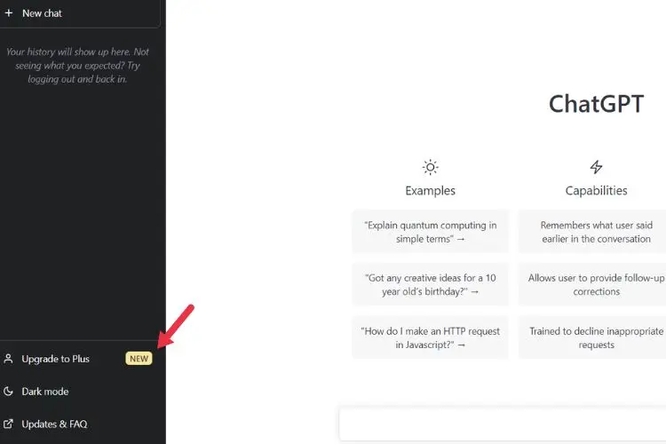
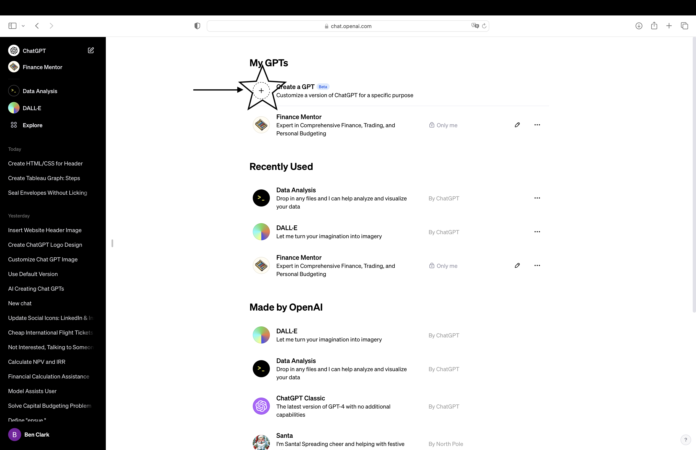

Personalized AI Made Simple: The No-Code Guide to Building GPTs
Video TutorialStep 1: Subscribe to Open AI
All you need to do is log in to your ChatGPT account and click Upgrade right above your profile on the left-hand side of the screen.
Step 2: Locate the Customizer
Navigate to the left sidebar and click on "Explore" in the top left and then click on "Create a GPT" Ready to begin? Let's do it!.
Step 3: Let's Build!
Toggle between create and configure. You can upload PDFs and documents of any kind to build its knowledge and abilities. Instruct it on what tonality and capabilities you want it. Here's what you can do:
- Experiment with configurations:
- Upload different types of documents.
- Adjust settings for tone and style.
- Test different inputs and outputs.
- Have fun building and testing your GPT's capabilities!
Video Tutorial
GPT Info Graph